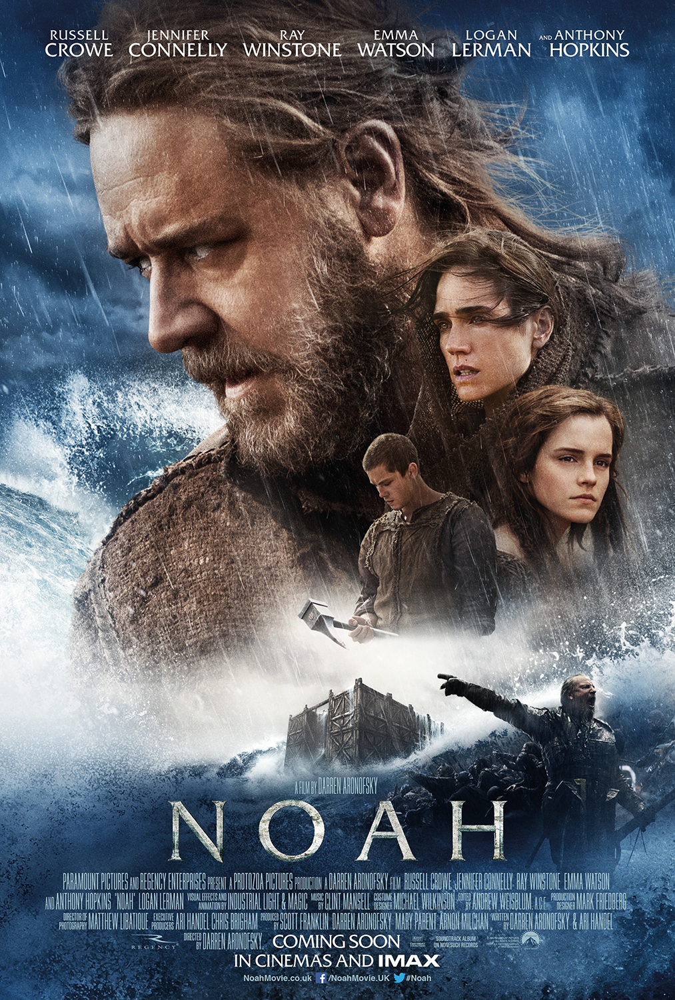

The Birth of a Nation (1915)

This movie came out in 1915. Regarded as maybe the most racist movie to come out of Hollywood. Blackface is used, as well as the infamous Ku Klux Klan, who are almost shown as heroes in the film.
The Interview (2014)

Comedy mocking the country of North Korea. With the main characters plotting an assasination attempt of the leader. Obviously banned in North Korea, the country also warned the United States about releasing the film. The studio then made cuts and changes to the original version to appease North Korea.
Wonder Woman (2017)

Banned in the country Lebanon. Actress Gal Gadot was the sole reason, due to her being in the Israeli army earlier in her life.
Noah (2014)
Muslim counties and some southeast Asia banned this movie. The movie depicts Noah, who is a prophet in Muslim accustoms.
The Da Vinci Code (2006)

Most films on this list are due to religious reasons, and Da Vinci Code is no exception. Jesus is depicted in this. Catholic religion is at the forefront and have a say that is not postive of the film.
Cannibal Holocaust (1980)

This gory movie has gruesome scenes and also even has animal cruelty shown. With a total of 6 deaths shown, as more probably were killed in unused scenes. As this is maybe the most banned movie on this list, even in todays standards.
Scarface (1932)
Coming out in 1932, this movie was well ahead of its time. Showing gore and kill scenes, back in 1932 this was too much for people to witness on screen. With more and more films showing crime and blood, it is a bit more normal nowadays.
I am Curious (Yellow & Blue (1967-1968))

Back in 1967, this raunchy movie came out to the public. Along with Scarface, this movie was probably ahead of its time. Showing sexual scenes, it has been known to be almost pornographic.
Brokeback Mountain (2005)

This movie is banned in several countries, along with the state of Utah, due to the homosexuality shown.
The Last Temptation of Christ (1988)

Along with the two other films on this list, this again is banned in several countries due to showing a depiction of a religious figure. Jesus who is god in several religions, is shown as having temptaions, as the film title suggests.